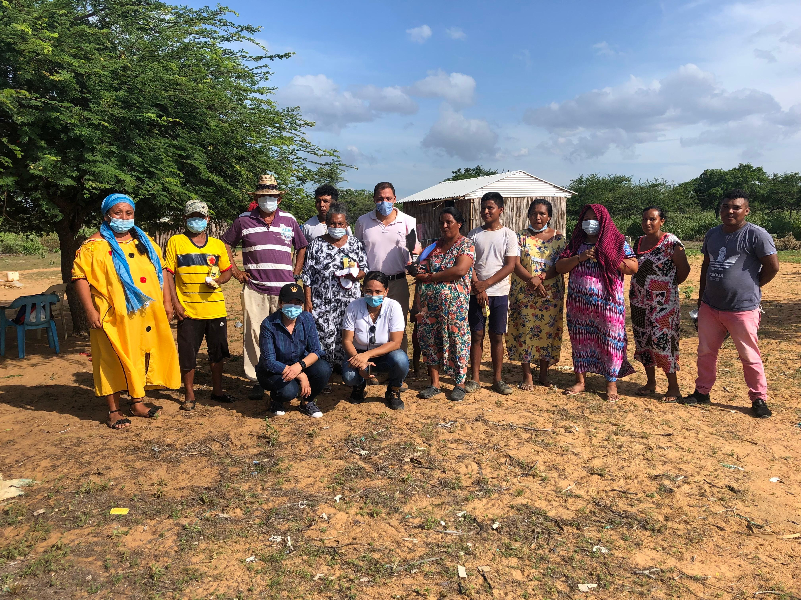
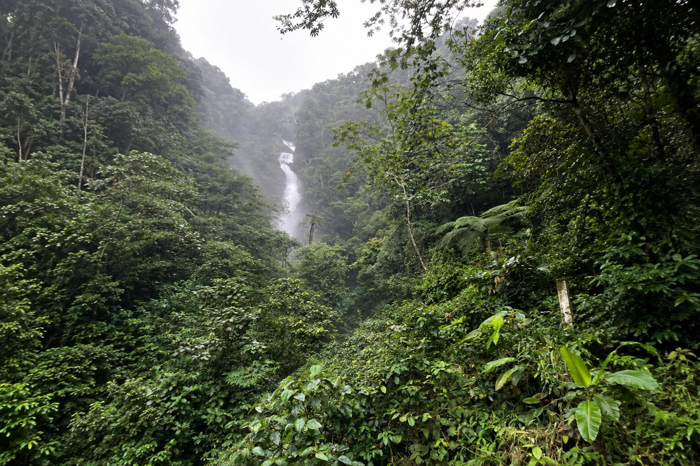
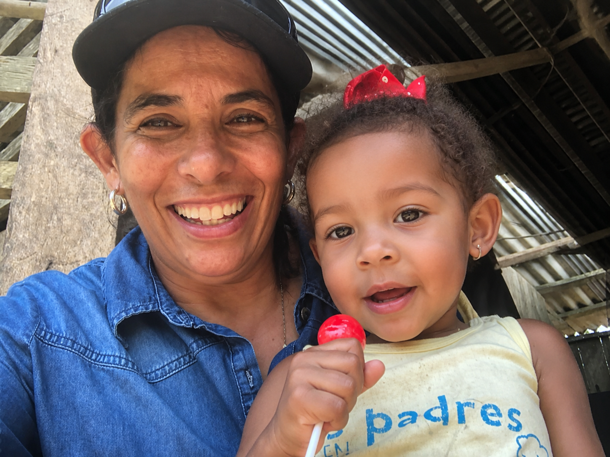
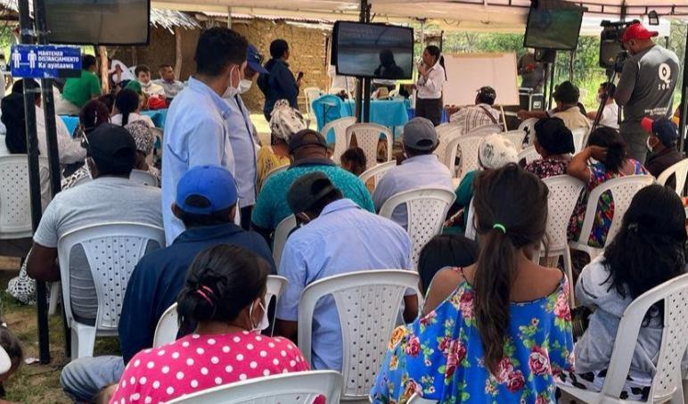

01 — 04
Amanecer en el territorio
Cada proyecto comienza con una mirada completa del paisaje y sus comunidades.

Somos una empresa privada colombiana, conformada por profesionales de diversas disciplinas. Ofrecemos servicios en el campo social y ambiental, acorde con las exigencias del mercado actual.
Nos regimos con políticas corporativas de ética profesional, efectividad y compromiso frente al entorno social, ambiental y empresarial. Fue creada en el año 2002 en la ciudad de Medellín.
Conoce nuestros servicios
Cada proyecto comienza con una mirada completa del paisaje y sus comunidades.

Protegemos los refugios donde el agua y la vida persisten.

Cada proyecto deja una huella positiva en el entorno y sus comunidades.

Más de 20 años de compromiso socioambiental en Colombia.
Más de 20 años acompañando proyectos con responsabilidad social y ambiental en los territorios de Colombia. Sigue bajando para recorrer nuestra huella.